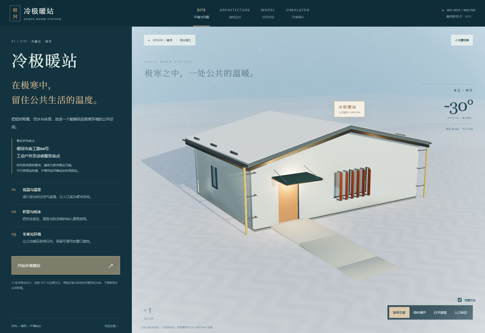
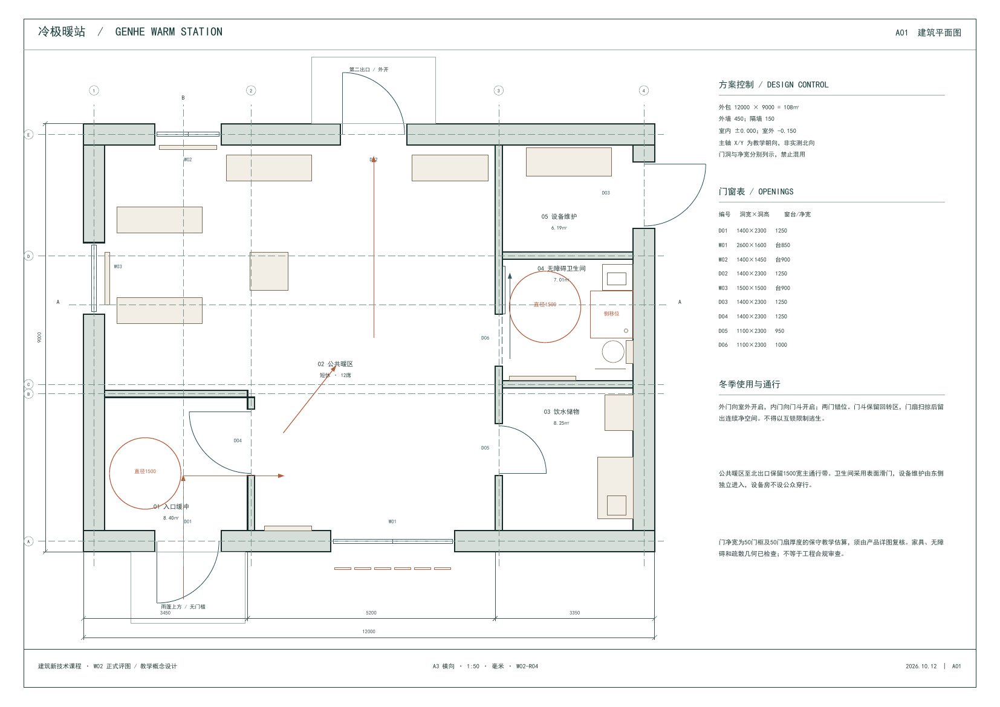

W01 / REV2研究依据
研究场地与使用问题
从根河极寒环境、既有服务点与户外劳动者需求出发，确定后续建筑问题。
- 场地与环境分析
- 设计任务书
- 原始 ZIP 内含 PDF、DOCX 与说明文件
COURSE ARCHIVE / W01—W03
以根河市户外劳动者服务站点为研究锚点，连续呈现第一周研究、第二周 R04 建筑成果与第三周环境响应模拟。

01 — 03 / COURSE DELIVERABLES
原始文件保留；网页模型与 W02 R04 同源。下载按钮提供可留存的作业文件。
从根河极寒环境、既有服务点与户外劳动者需求出发，确定后续建筑问题。
单层 12 × 9m 教学方案；入口缓冲、公共暖区、服务空间、双坡屋面与六片活动百叶。

原始R04解压目录（复核副本除外）有 91 个文件，缺少锁定清单中的 18 份 AutoCAD 打开 / 保存日志；原始压缩包共 112 个文件，其中清单锁定的 105 项均存在且哈希匹配，另有 7 项辅助文件。网站不补造日志；随包日志不代表本轮重新执行了 AutoCAD 原生验证。PDF、DWG、DXF、SKP、DAE、GLB 与参数文件均按 R04 清单归档。
在同一 R04 建筑上查看旋转模型、入口到暖区漫游、寒潮 / 积雪 / 冬季日照模拟与百叶锁止。
源码包包含网页、脚本、模型与运行说明；不包含 Git 历史或个人凭据。
CRIT / FOUR PLAN STUDIES
固定 12 × 9m 教学体量，以示意平面比较使用、维护和环境响应。R04 最终建筑单独保留，不被这些研究图替代。
LOCKED DESIGN BASELINE
四组平面为比较研究；后续网站模型、图纸与参数仍以 W02 R04 为准。热工、冻土基础、雪荷载、供暖 / 伴热容量与百叶构件性能需要专业校核。